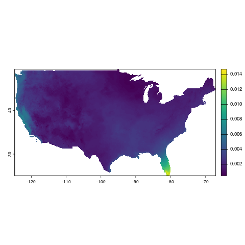

Climatology Lab gridMET
Mitchell Manware
2025-08-14
Source:vignettes/gridmet_workflow.Rmd
gridmet_workflow.RmdThis vignette demonstrates how to download, process, and calculate
covariates from the Climatology Lab’s gridMET dataset
using amadeus functions. Details are provided for each
function’s parameters and outputs. The examples utilize daily specific
humidity data. See https://www.climatologylab.org/wget-gridmet.html for
full variable names and acronyms. The messages returned by
amadeus functions have been omitted for brevity.
Download
Start by downloading the netCDF data files with
download_data.
-
dataset_name = "gridmet": gridMET dataset name. -
variable = "Near-Surface Specific Humidity": specific humidity variable name. -
year = c(2019, 2020): years of interest. -
directory_to_save = dir: directory to save the downloaded files. -
acknowledgement = TRUE: acknowledge that the raw data files are large and may consume lots of local storage. -
download = TRUE: download the data files. -
remove_command = TRUE: remove the temporary command file used to download the data. -
hash = TRUE: generate unique SHA-1 hash for the downloaded files.
dir <- tempdir()
amadeus::download_data(
dataset_name = "gridmet",
variable = "Near-Surface Specific Humidity",
year = c(2019, 2020),
directory_to_save = dir,
acknowledgement = TRUE,
download = TRUE,
remove_command = TRUE,
hash = TRUE
)[1] "aa5116525468299d1fc483b108b3e841fc40d7e5"Check the downloaded netCDF files.
list.files(dir, recursive = TRUE, pattern = "sph")[1] "sph/sph_2019.nc" "sph/sph_2020.nc"Process
Import and process the downloaded netCDF files with
process_covariates.
-
covariate = "gridmet": gridMET dataset name. -
variable = "Near-Surface Specific Humidity": specific humidity variable name. -
date = c("2019-12-13", "2022-01-10"): date range of interest. -
path = paste0(dir, "/sph"): directory containing the downloaded files.
sph_process <- amadeus::process_covariates(
covariate = "gridmet",
variable = "Near-Surface Specific Humidity",
date = c("2019-12-18", "2020-01-10"),
path = file.path(dir, "/sph")
)Check the processed SpatRaster object.
sph_processclass : SpatRaster
dimensions : 585, 1386, 24 (nrow, ncol, nlyr)
resolution : 0.04166667, 0.04166667 (x, y)
extent : -124.7875, -67.0375, 25.04583, 49.42083 (xmin, xmax, ymin, ymax)
coord. ref. : lon/lat WGS 84 (EPSG:4326)
sources : sph_2019.nc (14 layers)
sph_2020.nc (10 layers)
varnames : sph (near-surface specific humidity)
sph (near-surface specific humidity)
names : sph_20191218, sph_20191219, sph_20191220, sph_20191221, sph_20191222, sph_20191223, ...
unit : kg/kg, kg/kg, kg/kg, kg/kg, kg/kg, kg/kg, ...
time (days) : 2019-12-18 to 2020-01-10
terra::plot(sph_process[[1]])
Calculate covariates
Calculate covariates for California county boundaries with
calculate_covariates. County boundaries are accessed with
the tigris::counties function.
-
covariate = "gridmet": gridMET dataset name. -
from = sph_process: processedSpatRasterobject. -
locs = tigris::counties("CA", year = 2019): California county boundaries. -
locs_id = "NAME": county name identifier. -
radius = 0: size of buffer radius around each county. -
geom = "sf": return covariates as ansfobject.
library(tigris)
sph_covar <- amadeus::calculate_covariates(
covariate = "gridmet",
from = sph_process,
locs = tigris::counties("CA", year = 2019),
locs_id = "NAME",
radius = 0,
geom = "terra"
)Check the calculated covariates sf object.
sph_covarclass : SpatVector
geometry : polygons
dimensions : 1392, 3 (geometries, attributes)
extent : -124.482, -114.1312, 32.52883, 42.0095 (xmin, xmax, ymin, ymax)
coord. ref. : lon/lat WGS 84 (EPSG:4326)
names : NAME time sph_0
type : <chr> <POSIXt> <num>
values : Sierra 2019-12-18 0.003101
Sacramento 2019-12-18 0.005791
Santa Barbara 2019-12-18 0.004594